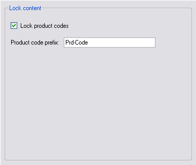

Extending the Configuration Options
This chapter provides an example of how to enhance your file type plug-in with another configuration option.
Add Another File Type Plug-in Option
Let us assume that the product code prefix may vary from file to file. In this case it makes sense to implement the product code string as an option that can be configured at runtime rather than hard-coding it in the application. This requires some additions to the filter settings, the control UI, and the file parser component.
Extend the File Type Settings
Before we can add the new option to the UI Control we first need to add it to the filter settings. The new setting should follow the same pattern as other settings we have added to the settings class - we will need to add a settings key, a default value, and an accessor property for the setting. We also need to update the ResetToDefaults, PopulateFromSettingsBundle and SaveToSettingsBundle methods to handle the new setting. See Putting It All Together for an example of how to do this.
Extend the UI Control
Extend the file type plug-in settings UI by adding a new text field called e.g. txt_PrdCodePrefix.

Add a helper function that enables or disables the new text field depending on whether the cb_LockPrdCodes check box is checked or not:
private void txt_PrdCodePrefix_TextChanged(object sender, EventArgs e)
{
_userSettings.PrdCodesPrefix = txt_PrdCodePrefix.Text;
}
public void UpdateControl()
{
cb_LockPrdCodes.Checked = _userSettings.LockPrdCodes;
txt_PrdCodePrefix.Text = _userSettings.PrdCodesPrefix;
}
Modify the File Parser
Last, you need to modify the file parser component, so that it uses the configurable product code prefix property rather than the hard-coded string. First, add a new global property to the file parser class:
public string PrdCodesPrefix
{
get;
set;
}
In the InitializeSettings method you need to read this property from the user settings to initialize the file parser class. Here is the complete method with PrdCodesPrefix initialized from the user settings.
public void InitializeSettings(Sdl.Core.Settings.ISettingsBundle settingsBundle, string configurationId)
{
UserSettingsExtended userSettings = new UserSettingsExtended();
userSettings.PopulateFromSettingsBundle(settingsBundle, configurationId);
LockPrdCodes = userSettings.LockPrdCodes;
PrdCodesPrefix = userSettings.PrdCodesPrefix;
}
In the ProcessLine() function you then need to change the else ifcondition from:
else if (sLine.StartsWith("Prd-Code") && LockPrdCodes==true)
to:
else if (sLine.StartsWith(PrdCodePrefix) && LockPrdCodes==true)
After rebuilding your project, the file type plug-in should implement the second configuration option and apply it during parsing.
Putting It All Together
Your extended UserSettings class should now look as shown below:
using Sdl.FileTypeSupport.Framework.Core.Settings;
using Sdl.Core.Settings;
namespace Sdk.FileTypeSupport.Samples.SimpleText
{
/// <summary>
/// This class is used to actually store the settings to the settings bundle, which
/// is physically saved in an *.sdlproj or in an *.sdltpl file.
/// </summary>
public class UserSettingsExtended : FileTypeSettingsBase
{
#region "Properties"
private const string SettingsLockPrdCodes = "LockPrdCodes";
private const string SettingsPrdCodesPrefix = "PrdCodesPrefix";
private const bool DefaultLockPrdCodes = true;
private const string DefaultPrdCodePrefix = "Prd-Code";
private bool _lockPrdCodes;
private string _prdCodesPrefix;
public bool LockPrdCodes
{
get { return _lockPrdCodes; }
set
{
_lockPrdCodes = value;
OnPropertyChanged("LockPrdCodes");
}
}
public string PrdCodesPrefix
{
get { return _prdCodesPrefix; }
set
{
_prdCodesPrefix = value;
OnPropertyChanged("PrdCodesPrefix");
}
}
#endregion
#region "Constructor"
public UserSettingsExtended()
{
ResetToDefaults();
}
#endregion
/// <summary>
/// Define the default value, which is Enabled, as the product code strings should
/// not be exposed to translation by default.
/// </summary>
#region "ResetToDefaults"
public override sealed void ResetToDefaults()
{
LockPrdCodes = DefaultLockPrdCodes;
PrdCodesPrefix = DefaultPrdCodePrefix;
}
#endregion
/// <summary>
/// This method is used to load the setting from the settings bundle,
/// which is physically stored in an XML-compliant *.sdlproj or *.sdltpl file.
/// </summary>
/// <param name="settingsBundle"></param>
/// <param name="configurationId"></param>
#region "PopulateFromSettingsBundle"
public override void PopulateFromSettingsBundle(ISettingsBundle settingsBundle, string filterDefinitionId)
{
ISettingsGroup settingsGroup = settingsBundle.GetSettingsGroup(filterDefinitionId);
LockPrdCodes = GetSettingFromSettingsGroup(settingsGroup, SettingsLockPrdCodes, DefaultLockPrdCodes);
PrdCodesPrefix = GetSettingFromSettingsGroup(settingsGroup, SettingsPrdCodesPrefix, DefaultPrdCodePrefix);
}
#endregion
/// <summary>
/// This method is used to store the settings as configured in the plug-in UI
/// in the settings bundle, which means that the settings are physically written
/// into the XML-compliant *.sdlproj or *.sdltpl file.
/// </summary>
/// <param name="settingsBundle"></param>
/// <param name="configurationId"></param>
#region "SaveToSettingsBundle"
public override void SaveToSettingsBundle(ISettingsBundle settingsBundle, string filterDefinitionId)
{
ISettingsGroup settingsGroup = settingsBundle.GetSettingsGroup(filterDefinitionId);
UpdateSettingInSettingsGroup(settingsGroup, SettingsLockPrdCodes, LockPrdCodes, DefaultLockPrdCodes);
UpdateSettingInSettingsGroup(settingsGroup, SettingsPrdCodesPrefix, PrdCodesPrefix, DefaultPrdCodePrefix);
}
#endregion
}
}
Your extended SettingsUI class should now look as shown below:
using System;
using System.Collections.Generic;
using System.ComponentModel;
using System.Drawing;
using System.Data;
using System.Linq;
using System.Text;
using System.Windows.Forms;
using Sdl.FileTypeSupport.Framework.Core.Settings;
namespace Sdk.FileTypeSupport.Samples.SimpleText.WinUI
{
/// <summary>
/// Implements the user interface for the file type definition.
/// </summary>
#region "ClassDeclaration"
public partial class SettingsUIExtended : UserControl, IFileTypeSettingsAware<UserSettingsExtended>
#endregion
{
/// <summary>
/// Create a settings object based on the UserSettings class.
/// </summary>
#region "SettingsObject"
private UserSettingsExtended _userSettings;
#endregion
/// <summary>
/// Initalize the user interface control by setting it to the
/// setting value stored in the settings bundle.
/// </summary>
#region "Initialize"
public SettingsUIExtended()
{
InitializeComponent();
}
#endregion
/// <summary>
/// Reset the user interface control to its default value, which is
/// checked, i.e. the product lock option should be enabled
/// by default.
/// </summary>
#region "UpdateControl"
public void UpdateControl()
{
cb_LockPrdCodes.Checked = _userSettings.LockPrdCodes;
txt_PrdCodePrefix.Text = _userSettings.PrdCodesPrefix;
}
#endregion
/// <summary>
/// Save the settings based on the value of the the check box.
/// The setting is saved through the UserSettings class, which
/// handles the plug-in settings bundle.
/// </summary>
/// <param name="sender"></param>
/// <param name="e"></param>
#region "SaveSetting"
private void cb_LockPrdCodes_CheckedChanged(object sender, EventArgs e)
{
_userSettings.LockPrdCodes = cb_LockPrdCodes.Checked;
if (cb_LockPrdCodes.Checked)
txt_PrdCodePrefix.Enabled = true;
else
txt_PrdCodePrefix.Enabled = false;
}
#endregion
#region "SaveTextBox"
private void txt_PrdCodePrefix_TextChanged(object sender, EventArgs e)
{
_userSettings.PrdCodesPrefix = txt_PrdCodePrefix.Text;
}
#endregion
/// <summary>
/// Implementation of <code>IFileTypeSettingsAware</code> allowing the Filter Framework
/// to pass through the user settings so that we can initialize the UI.
/// </summary>
#region "ApplySettings"
public UserSettingsExtended Settings
{
get
{
return _userSettings;
}
set
{
_userSettings = value;
UpdateControl();
}
}
#endregion
}
}
Note
This content may be out-of-date. To check the latest information on this topic, inspect the libraries using the Visual Studio Object Browser.